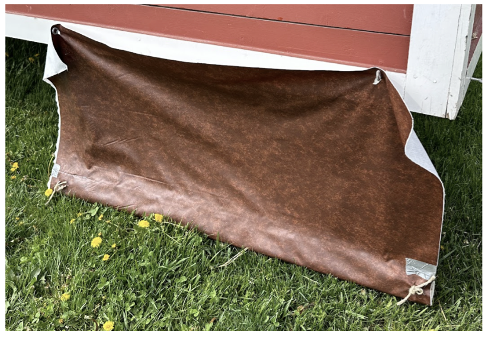
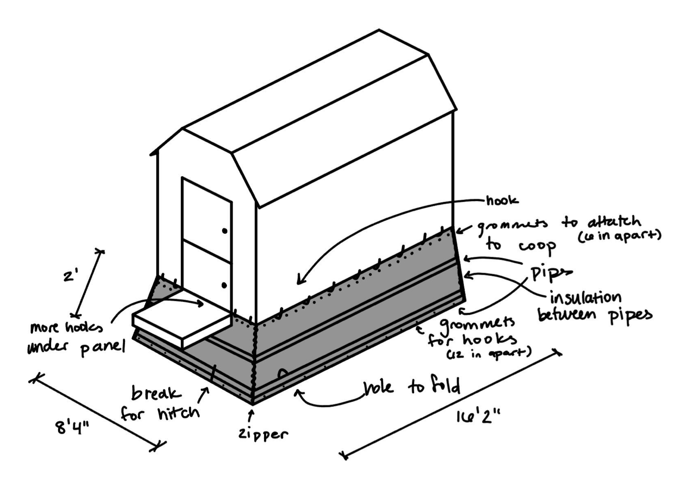

Cluck Curtain

OBJECTIVE:
Increase the chickens’ comfort and egg production by mitigating the cold air flow arising from the grated floor and out of the doors of the coop during the wintertime.
OBJECTIVE:
Increase the chickens’ comfort and egg production by mitigating the cold air flow arising from the grated floor and out of the doors of the coop during the wintertime.
I prepared and facilitated a primary research interview with our contact at the farm, Mr. Blake Lanphier. Through this and secondary research, we developed three main design constraints. The design must:


Our team conducted a fast-paced and collaborative brainstorming session, during which we generated ~30 ideas.
I led the building and testing of four initial mockup designs, which tested a variety of materials and weighting methods.
Our team built a higher-fidelity prototype and brought it to the farm for testing (see the figure above).
Due to my prior sewing experience, I led the manufacturing process of the final prototype:

Finally, my team and I synthesized our design choices and findings into a Final Report. Then, we presented our design and deliverables to our client.
Due to our collaboration and organization, my team and I were able to deliver a solution to our client on time and in budget. I gained extensive experience in rapid prototyping as I iterated through designs using continuous testing. I also practiced manufacturing physical components of a solution and working with a team in a professional setting.
